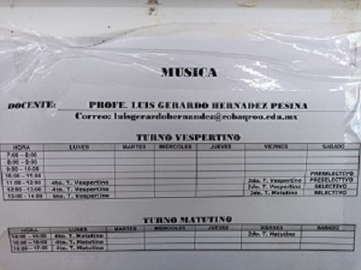

planteles PlantelChetumal Dos, Bacalar, Chetumal Uno, Sabán, Candelaria, José María Morelos, Cancún Uno, Cancún Dos, Ignacio Zaragoza, Puerto Morelos, Cozumel y Playa del Carmen. A continuacion les dare una descripcion El baloncesto, también conocido como básquetbol, basquetbol o simplemente básquet, es un deporte de equipo, jugado entre dos conjuntos de cinco jugadores cada uno durante cuatro períodos o cuartos de diez minutos cada uno ―doce minutos cada cuarto en la NBA
planteles Plantel Chetumal Dos, Río Hondo, Carlos A. Madrazo, Bacalar, Chetumal Uno, Señor, Tihosuco, Presidente Juárez, Candelaria, José María Morelos, Cancún Uno, Cancún Dos, Cancún Tres, Ignacio Zaragoza, Ciudad Mujeres, Puerto Morelos, Cozumel y Playa del Carmen. A continuacion les dare una descripcion El voleibol, vóleibol, volibol, vólibol, balonvolea o simplemente vóley es un deporte que se juega con una pelota y en el que dos equipos, integrados por seis jugadores cada uno, se enfrentan sobre un área de juego separada por una red central.
planteles Plantel Chetumal Uno y Dos, Río Hondo, Carlos A. Madrazo, Nicolás Bravo, Bacalar, Sabán, Tihosuco, José Ma. Morelos, Cancún Uno, Cancún Dos, Cancún Tres y Cancún Cuatro, Ignacio Zaragoza, Ciudad Mujeres, Isla Mujeres, Cozumel y Playa del Carmen. A continuacion les dare una descripcion Los Bailes Folclóricos es un término utilizado para describir a un gran número de danzantes, que tienden a compartir los atributos similares: Originalmente bailado aproximadamente en el siglo XIX o antes. Su práctica se realiza por una tradición heredada, más que por la innovación.
planteles Plantel Río Hondo, Chetumal Uno, Chetumal Dos, Carlos A. Madrazo, Nicolas Bravo, Bacalar, Maya Balam, Sabán, Señor, Tihosuco, Presidente Juárez, Candelaria, Jose María Morelos, Cancún Uno, Cancún Dos, Cancún Tres, Cancún Cuatro, Ignacio Zaragoza, Ciudad Mujeres, Puerto Morelos, Cozumel, Playa Del Carmen. A continuacion les dare una descripcion El fútbol o futbol es un deporte de equipo jugado entre dos conjuntos de once jugadores cada uno, mientras los árbitros se ocupan de que las normas se cumplan correctamente. Es, ampliamente, considerado el deporte más popular del mundo, pues lo practican unas 270 millones de personas.
planteles Plantel Chetumal Dos, Carlos A. Madrazo, Bacalar, Chetumal Uno, Sabán, Tihosuco, Jose María Morelos, Cancún Uno, Cozumel, Cancún Dos. A continuacion les dare una descripcion La pintura es el arte de la representación gráfica utilizando pigmentos mezclados con otras sustancias aglutinantes, orgánicas o sintéticas. En este arte se emplean técnicas de pintura, conocimientos de teoría del color y de composición pictórica, y el dibujo.
planteles Plantel José Ma. Morelos, Chetumal Uno, Chetumal Dos, Río Hondo, Carlos A. Madrazo, Cancún Uno, Cancún Dos, Cancún Cuatro y Cozumel. A continuacion les dare una descripcion La música es, según la definición tradicional del término, el arte de crear y organizar sonidos y silencios respetando los principios fundamentales de la melodía, la armonía y el ritmo, mediante la intervención de complejos procesos psicoanímicos.
planteles Plantel Chetumal Dos, Carlos A. Madrazo, Nicolás Bravo, Chetumal Uno, José María Morelos, Cancún Uno, Cancún Dos, Ignacio Zaragoza y Playa del Carmen. A continuacion les dare una descripcion Un escolta es el profesional de la seguridad, pública o privada, especializado en la protección de personas, experto en combate cuerpo a cuerpo y especialista en armas blancas, armas de fuego y armas convencionales y no convencionales, principalmente capacitado para minimizar cualquier situación de riesgo.

planteles Plantel Chetumal Uno, Cancún Uno, Cancún Dos, Cancún Tres, Cancún Cuatro, Ignacio Zaragoza y Playa del Carmen. A continuacion les dare una descripcion El teatro es la rama de las artes escénicas relacionada con la actuación. Representa historias actuadas frente a los espectadores o frente a una cámara usando una combinación de discurso, gestos, escenografía, música, sonido y espectáculo.
planteles Plantel Chetumal Uno, Río Hondo, Chetumal Dos, José María Morelos, Cancún Uno, Cancún Dos y Cozumel. A continuacion les dare una descripcion Son un medio de mando que tiene por objeto sustituir las órdenes a viva voz, por medio de la ejecución de toques militares establecidos en el manual de ademanes y toques militares de la Secretaría de la Defensa Nacional.